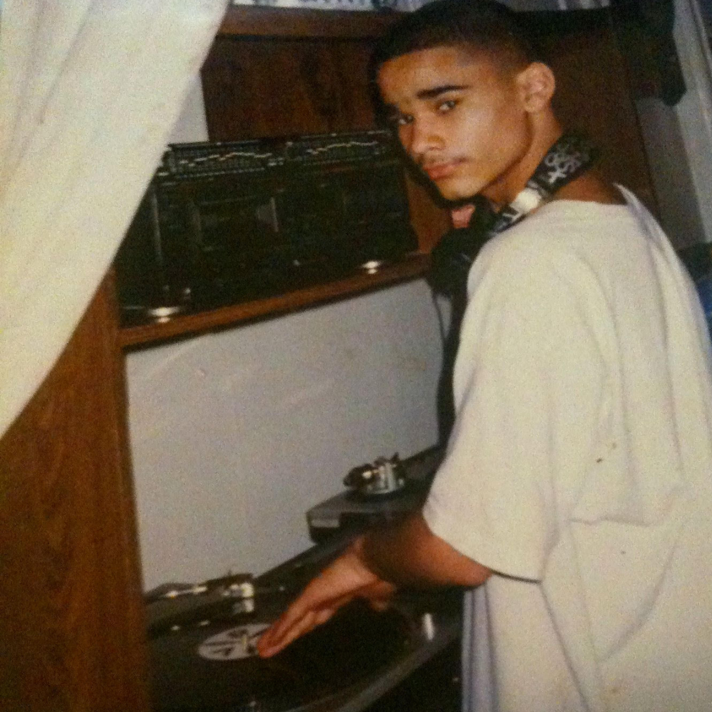

Music
The Archives. Music B4 The Words.
April 2026
I remember being a kid and like most kids at some point I was like, "I wanna be a DJ!"
I think any kid who goes to a party and sees the guy in the front of the room controlling the sound coming out of the speakers goes home and thinks about it. You see a whole dance floor moving and then there's one person controlling all of it in his own way.
I used to daydream about it on and off for a long time.
As a kid I would fall asleep with headphones on. That was my little escape. Helped stop the constant thinking and noise. I would run to the local bootleg dude on 14th street and grab a 3 dollar tape. Run DMC, Boyz II Men, Mary J, LL Cool J, Kid Capri, DJ Doo Wop, Ron G, DJ Rei Double R & G-Bo The Pro, or whatever random mixtape caught my eye.
Music was always therapeutic for me in some form.
It took me a long time to realize how much of an effect it had on me, but it did.
When I really got into it I loved being in the studio. Or at Beyond's grandmother's house. We were there pretty much every day after school. Or going to the record store, scratching records until they had too much static to even enjoy.

We eventually got our first official mixtape done on a Roland BR8. I used to love that machine. My boy Slay put up the money and helped get us a sponsor and it was all history from there.
Years of late nights, studio sessions, parties, clubs and events.
I've since stepped away from the scene for more reasons than I have time to get into right now.
The other day I was driving and thinking about this new Michael Jackson movie that recently came out. I've been wanting to go see it but I'm waiting to scoop my little man up and take him. Going to the movies has kind of become our thing. I hope he enjoys it as much as I know I'm going to.
Then I remembered a Michael Jackson mixtape I put out.
While driving 70 mph on the Florida turnpike I did a quick search and somehow it popped up on my SoundCloud. I haven't looked at that shit in years.
I played it front to back.
Zoned the fuck out.
And when it ended something clicked.
I started thinking about all the mixtapes, the mixes, the random shit I've worked on over the years. How far some of them got. How many people played them, heard them, loved them, bought them, stole them from friends. Shared moments with them the same way I used to share moments with mixtapes as a fan.
Then it hit me.
They don't really live anywhere anymore.
I thought about putting them online before but there was always a reason not to.
Too busy.
Ownership shit.
Me being over critical.
After that MJ mix finished I had a moment. A quick convo out loud in the whip.
Maybe it's time to get them all up.
Does it make sense now?
Does it fall in line with what I'm doing?
Is it worth the time?
Does anyone even care?
I mean I can always listen to them if I want to. Might be worth it in itself.
Then I said fuck it.
Got home and immediately started digging. Putting together whatever I could find. Started brainstorming where they'd be best.
I decided to put everything on YouTube. Nothing fancy. Just get them up and give them a place to live.
The more I looked the more I found, and I'm still digging.
I even ordered a CD hub because most of these mixes are on CD and I don't even own a CD player anymore. How times have changed.
Going through all of this has been taking me back. Different chapters, different versions of myself. And honestly it's been fulfilling as hell.
Seeing how much I worked on and put out over time. From distributing mixtapes across the country independently, to having mixes aired in 70 million homes, to millions of streams and downloads on Apple's DJ mix platform, to doing a podcast before motherfuckers even knew what a podcast was.
It's all been making me smile.
I hope it does the same for whoever reads this and decides to click the link and let something play.
The Vault.
YamEyes Vision Archives.
Peace & Love